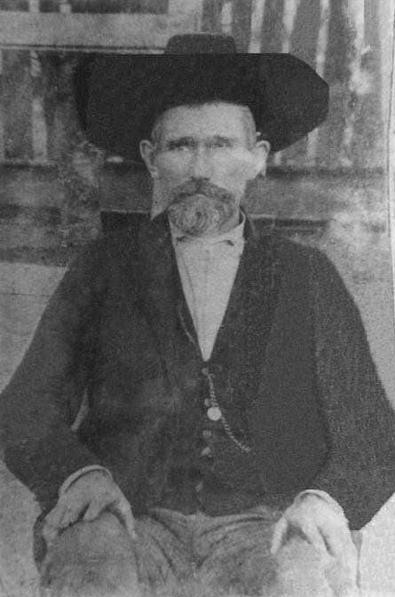
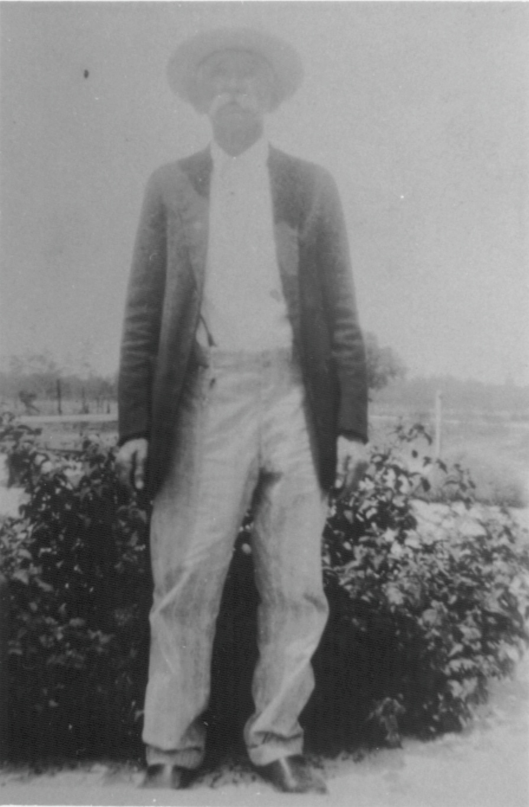
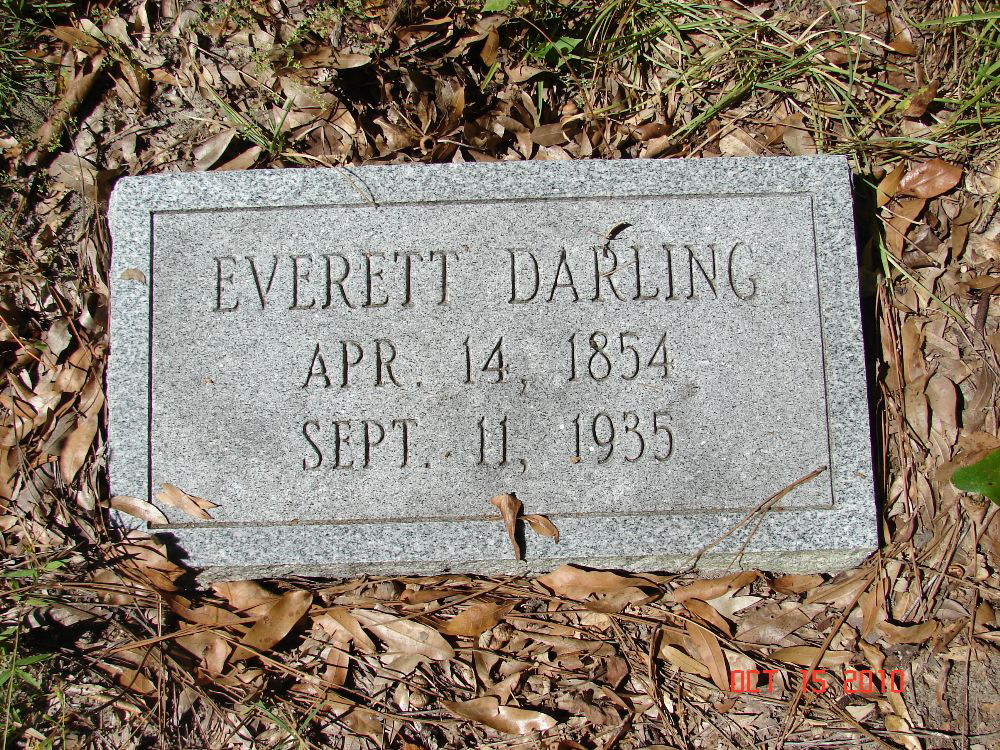

Everett Darling
1854–1935
Life Events
Born: April 14, 1854 — Connecticut, United States
Died: September 11, 1935 — Mayo, Lafayette County, Florida, United States
Family
Spouse: Sarah Lusindy Wadsworth
Children
Military Service
No military service information has been added.
Biography
Everett Darling was born on April 14, 1854, in Connecticut. He was the father of Mary Frances Darling and an ancestor of the Singletary family.
Everett died on September 11, 1935, in Mayo, Lafayette County, Florida, at the age of 81.
Photos


Grave & Burial

Brady Cemetery, Lee, Madison County, Florida
Sources
-
1879 Marriage License — Everett Darling and Sarah Wadsworth
Type: Marriage RecordMarriage license and certification for Everett Darling and Sarah Wadsworth in Madison County, Florida. Family research identifies their marriage date as March 28, 1879, in Lee, Florida.
Location: Lee, Madison County, Florida
Supports: Marriage of Everett Darling and Sarah Wadsworth, Marriage recorded in Madison County, Florida, Reported marriage date of March 28, 1879
-
1880 U.S. Federal Census — Everett and Sarah Dowling Household
Type: CensusThe 1880 U.S. Federal Census records Everett Dowling, approximately age 26, his wife Sarah, approximately age 40, and Liddy Blanton, approximately age 4, identified as Everett's stepdaughter. The household appears in Enumeration District 99, Madison County, Florida. The census surname is recorded or transcribed as Dowling, while other family records use Darling. Liddy's biological father has not been established. The census was enumerated June 16, 1880.
Location: Ellaville and Norton's Creek Precinct, Madison County, Florida
Supports: Everett and Sarah were living together as husband and wife in 1880, Everett was approximately 26 years old, Sarah was approximately 40 years old, Liddy Blanton was approximately 4 years old, Liddy was identified as Everett's stepdaughter, Household residence in Madison County, Florida, in 1880